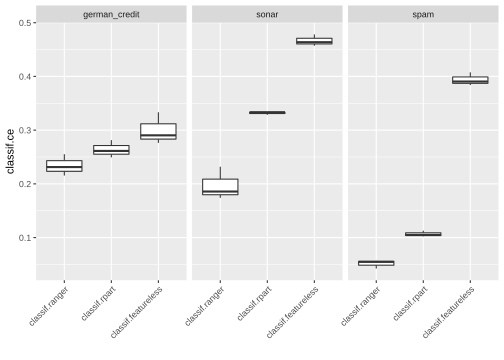
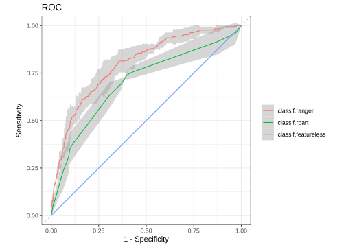

2.6 Benchmarking
Comparing the performance of different learners on multiple tasks and/or different resampling schemes is a common task.
This operation is usually referred to as “benchmarking” in the field of machine-learning.
The mlr3 package offers the benchmark() convenience function.
2.6.1 Design Creation
In mlr3 we require you to supply a “design” of your benchmark experiment.
Such a design is essentially a table of settings you want to execute.
It consists of unique combinations of Task, Learner and Resampling triplets.
We use the benchmark_grid() function to create an exhaustive design and instantiate the resampling properly, so that all learners are executed on the same train/test split for each tasks.
We set the learners to predict probabilities and also tell them to predict the observations of the training set (by setting predict_sets to c("train", "test")).
Additionally, we use tsks(), lrns(), and rsmps() to retrieve lists of Task, Learner and Resampling in the same fashion as tsk(), lrn() and rsmp().
library(mlr3verse)
design = benchmark_grid(
tasks = tsks(c("spam", "german_credit", "sonar")),
learners = lrns(c("classif.ranger", "classif.rpart", "classif.featureless"),
predict_type = "prob", predict_sets = c("train", "test")),
resamplings = rsmps("cv", folds = 3)
)
print(design)## task learner resampling
## 1: <TaskClassif[46]> <LearnerClassifRanger[34]> <ResamplingCV[19]>
## 2: <TaskClassif[46]> <LearnerClassifRpart[34]> <ResamplingCV[19]>
## 3: <TaskClassif[46]> <LearnerClassifFeatureless[34]> <ResamplingCV[19]>
## 4: <TaskClassif[46]> <LearnerClassifRanger[34]> <ResamplingCV[19]>
## 5: <TaskClassif[46]> <LearnerClassifRpart[34]> <ResamplingCV[19]>
## 6: <TaskClassif[46]> <LearnerClassifFeatureless[34]> <ResamplingCV[19]>
## 7: <TaskClassif[46]> <LearnerClassifRanger[34]> <ResamplingCV[19]>
## 8: <TaskClassif[46]> <LearnerClassifRpart[34]> <ResamplingCV[19]>
## 9: <TaskClassif[46]> <LearnerClassifFeatureless[34]> <ResamplingCV[19]>The created design can be passed to benchmark() to start the computation.
It is also possible to create a custom design manually.
However, if you create a custom task with data.table(), the train/test splits will be different for each row of the design if you do not manually instantiate the resampling before creating the design.
See the help page on benchmark_grid() for an example.
2.6.2 Execution and Aggregation of Results
After the benchmark design is ready, we can directly call benchmark():
# execute the benchmark
bmr = benchmark(design)Note that we did not instantiate the resampling instance manually.
benchmark_grid() took care of it for us:
Each resampling strategy is instantiated once for each task during the construction of the exhaustive grid.
Once the benchmarking is done, we can aggregate the performance with $aggregate().
We create two measures to calculate the AUC for the training set and for the predict set:
measures = list(
msr("classif.auc", predict_sets = "train", id = "auc_train"),
msr("classif.auc", id = "auc_test")
)
tab = bmr$aggregate(measures)
print(tab)## nr resample_result task_id learner_id resampling_id
## 1: 1 <ResampleResult[21]> spam classif.ranger cv
## 2: 2 <ResampleResult[21]> spam classif.rpart cv
## 3: 3 <ResampleResult[21]> spam classif.featureless cv
## 4: 4 <ResampleResult[21]> german_credit classif.ranger cv
## 5: 5 <ResampleResult[21]> german_credit classif.rpart cv
## 6: 6 <ResampleResult[21]> german_credit classif.featureless cv
## 7: 7 <ResampleResult[21]> sonar classif.ranger cv
## 8: 8 <ResampleResult[21]> sonar classif.rpart cv
## 9: 9 <ResampleResult[21]> sonar classif.featureless cv
## iters auc_train auc_test
## 1: 3 0.9995 0.9853
## 2: 3 0.9046 0.8971
## 3: 3 0.5000 0.5000
## 4: 3 0.9983 0.7966
## 5: 3 0.7770 0.6973
## 6: 3 0.5000 0.5000
## 7: 3 1.0000 0.9257
## 8: 3 0.9286 0.7274
## 9: 3 0.5000 0.5000We can aggregate the results even further. For example, we might be interested to know which learner performed best over all tasks simultaneously. Simply aggregating the performances with the mean is usually not statistically sound. Instead, we calculate the rank statistic for each learner grouped by task. Then the calculated ranks grouped by learner are aggregated with data.table. Since the AUC needs to be maximized, we multiply the values by \(-1\) so that the best learner has a rank of \(1\).
library(data.table)
# group by levels of task_id, return columns:
# - learner_id
# - rank of col '-auc_train' (per level of learner_id)
# - rank of col '-auc_test' (per level of learner_id)
ranks = tab[, .(learner_id, rank_train = rank(-auc_train), rank_test = rank(-auc_test)), by = task_id]
print(ranks)## task_id learner_id rank_train rank_test
## 1: spam classif.ranger 1 1
## 2: spam classif.rpart 2 2
## 3: spam classif.featureless 3 3
## 4: german_credit classif.ranger 1 1
## 5: german_credit classif.rpart 2 2
## 6: german_credit classif.featureless 3 3
## 7: sonar classif.ranger 1 1
## 8: sonar classif.rpart 2 2
## 9: sonar classif.featureless 3 3# group by levels of learner_id, return columns:
# - mean rank of col 'rank_train' (per level of learner_id)
# - mean rank of col 'rank_test' (per level of learner_id)
ranks = ranks[, .(mrank_train = mean(rank_train), mrank_test = mean(rank_test)), by = learner_id]
# print the final table, ordered by mean rank of AUC test
ranks[order(mrank_test)]## learner_id mrank_train mrank_test
## 1: classif.ranger 1 1
## 2: classif.rpart 2 2
## 3: classif.featureless 3 3Unsurprisingly, the featureless learner is outperformed on both training and test set. The classification forest also outperforms a single classification tree.
2.6.3 Plotting Benchmark Results
Analogously to plotting tasks, predictions or resample results, mlr3viz also provides a autoplot() method for benchmark results.
autoplot(bmr) + ggplot2::theme(axis.text.x = ggplot2::element_text(angle = 45, hjust = 1))
We can also plot ROC curves.
To do so, we first need to filter the BenchmarkResult to only contain a single Task:
bmr_small = bmr$clone()$filter(task_id = "german_credit")
autoplot(bmr_small, type = "roc")
All available plot types are listed on the manual page of autoplot.BenchmarkResult().
2.6.4 Extracting ResampleResults
A BenchmarkResult object is essentially a collection of multiple ResampleResult objects.
As these are stored in a column of the aggregated data.table(), we can easily extract them:
tab = bmr$aggregate(measures)
rr = tab[task_id == "german_credit" & learner_id == "classif.ranger"]$resample_result[[1]]
print(rr)## <ResampleResult> of 3 iterations
## * Task: german_credit
## * Learner: classif.ranger
## * Warnings: 0 in 0 iterations
## * Errors: 0 in 0 iterationsWe can now investigate this resampling and even single resampling iterations using one of the approaches shown in the previous section:
measure = msr("classif.auc")
rr$aggregate(measure)## classif.auc
## 0.7966# get the iteration with worst AUC
perf = rr$score(measure)
i = which.min(perf$classif.auc)
# get the corresponding learner and train set
print(rr$learners[[i]])## <LearnerClassifRanger:classif.ranger>
## * Model: -
## * Parameters: num.threads=1
## * Packages: ranger
## * Predict Type: prob
## * Feature types: logical, integer, numeric, character, factor, ordered
## * Properties: importance, multiclass, oob_error, twoclass, weightshead(rr$resampling$train_set(i))## [1] 4 5 11 15 16 182.6.5 Converting and Merging
A ResampleResult can be casted to a BenchmarkResult using the converter as_benchmark_result().
Additionally, two BenchmarkResults can be merged into a larger result object.
task = tsk("iris")
resampling = rsmp("holdout")$instantiate(task)
rr1 = resample(task, lrn("classif.rpart"), resampling)
rr2 = resample(task, lrn("classif.featureless"), resampling)
# Cast both ResampleResults to BenchmarkResults
bmr1 = as_benchmark_result(rr1)
bmr2 = as_benchmark_result(rr2)
# Merge 2nd BMR into the first BMR
bmr1$combine(bmr2)
bmr1## <BenchmarkResult> of 2 rows with 2 resampling runs
## nr task_id learner_id resampling_id iters warnings errors
## 1 iris classif.rpart holdout 1 0 0
## 2 iris classif.featureless holdout 1 0 0